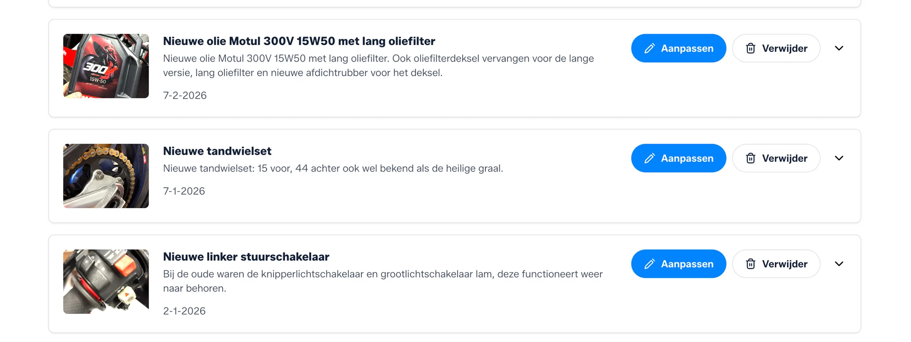

Auto onderhoud bijhouden: van APK tot complete voertuighistorie
Onderhoud bijhouden gaat verder dan een bonnetje bewaren. Datum, kilometerstand, facturen, foto's en context bouwen samen een verhaal dat zijn waarde behoudt.
- Overzicht op APK, beurten en reparaties
- Bewijs ook bij zelf uitgevoerd onderhoud
- Overdraagbare historie bij verkoop
Kort antwoord
Consequent bijhouden levert meer op dan je denkt
Niet alleen bij verkoop, maar ook tijdens bezit: je weet precies wat er is gedaan, wat het heeft gekost en wanneer er iets gepland staat.
Auto onderhoud bijhouden klinkt als administratief werk, maar in de praktijk is het simpelweg vastleggen wat toch al gedaan wordt. De APK was in juni, de banden zijn in november verwisseld, de remmen zijn vorig voorjaar nagekeken. Wie dat bijhoudt, heeft jaren later nog antwoord als iemand ernaar vraagt.
Wat je per onderhoudsmoment vastlegt
Kilometerstand
Type onderhoud of reparatie
Onderdelen en vloeistoffen
Kosten
Wie het heeft gedaan
Facturen en kassabonnen
Foto's van het werk
Opmerkingen voor later
Waarom het loont
Waarom auto-onderhoud bijhouden belangrijk is
De APK is het meest bekende moment, maar onderhoud loopt het hele jaar door.
APK is jaarlijks verplicht en een logisch moment om de staat van je auto te documenteren. Bewaar de keuringsuitslag, noteer de datum en kilometerstand en voeg geconstateerde gebreken of gedane reparaties toe. Als je de auto later verkoopt, toont een reeks APK-uitkomsten direct dat het voertuig consequent gekeurd is.
Periodieke beurten zoals een oliewisseling, luchtfilter of koelwater zijn de basis van goed autobeheer. Bij elke beurt noteer je wat er is gedaan, welke vloeistoffen of onderdelen zijn gebruikt en wat het heeft gekost. Zo zie je ook na jaren direct terug wanneer iets voor het laatst gedaan is.
Bandenwissel gebeurt doorgaans twee keer per jaar. Noteer wanneer je winter- of zomerbanden hebt opgemonteerd, wat de profieldiepte was en of banden zijn geroteerd. Dat maakt de volgende wissel makkelijker en geeft bij verkoop een completer beeld van hoe de auto is onderhouden.
Reparaties zijn onverwacht maar des te belangrijker om te documenteren. Een kapotte riem, een defect raam of een geremonteerd onderdeel verdienen een eigen invoer met factuur en uitleg. Zo weet je exact wat wanneer vervangen is, en wat een volgende eigenaar of een garage al weet over de staat van de auto.
Recalls worden soms pas jaren later bekend. Als je bijhoudt welke werkzaamheden al zijn uitgevoerd en wanneer, kun je snel aantonen dat een recall al is verwerkt, of juist vaststellen dat dat nog niet het geval is.
Voorbeeld onderhoudsregistratie voor een auto
| Datum | Km-stand | Onderhoud | Onderdelen | Kosten | Bewijs |
|---|---|---|---|---|---|
| 14-01-2026 | 87.240 km | Oliebeurt | 5W-30, oliefilter | € 89 | Factuur garage |
| 27-03-2026 | 89.100 km | Bandenwissel zomer | 4x 205/55 R16 | € 220 | Kassabon |
| 10-06-2026 | 91.450 km | APK + remblokken voor | Remblokken voor | € 185 | APK-keuring + factuur |
Vergelijking
Het verschil met Excel of een papieren boekje
Er zijn meerdere manieren om auto-onderhoud bij te houden. Ze zijn niet allemaal even praktisch op de lange termijn.
Een papieren onderhoudsboekje is vertrouwd en eenvoudig. Maar het heeft een vaste lay-out, biedt geen ruimte voor foto's of documenten en raakt makkelijk kwijt. Bij een tweedehands auto ontbreekt het papieren boekje bovendien vaak helemaal.
Excel of Google Sheets is flexibel en gratis. Je bouwt je eigen structuur, maar dat is ook het probleem: geen herinneringen, geen fotoopslag en geen exportfunctie voor derden. Bijhouden vereist discipline, en de meeste mensen geven het op zodra het even druk is.
GarageBook combineert structuur met gebruiksgemak. Per onderhoudsmoment leg je datum, kilometerstand, werkzaamheden, kosten, facturen en foto's vast. Alles staat in chronologische volgorde, is doorzoekbaar en deelbaar, ook met je garage, een taxateur of een potentiele koper.
Wil je meer lezen over een auto onderhoud app als alternatief voor spreadsheets? Bekijk ook die vergelijking.
Hoe GarageBook helpt: een centrale plek voor alles
In plaats van losse bonnetjes, verspreide foto's en e-mails over garantie, kom je uit bij een overzicht dat altijd up-to-date is.
GarageBook werkt als een digitaal voertuigdossier. Je voegt je auto toe, vult de onderhoudshistorie in en houdt elk nieuw moment bij direct na de beurt. De app geeft je overzicht per voertuig, zonder dat je zelf een structuur hoeft te bouwen.
Overdraagbaar bij verkoop. Bij verkoop exporteer je de volledige onderhoudshistorie als PDF, of deel je de publieke voertuigpagina met een geinteresseerde koper. Dat geeft direct meer vertrouwen dan een mondeling verhaal. Lees ook meer over hoe voertuighistorie bijdraagt aan een betere verkoopprijs.
Deelbaar met garage of taxateur. Als je auto ter keuring of reparatie gaat, kun je de onderhoudshistorie delen. Dat bespaart de monteur tijd en maakt de context direct duidelijk: wat is al gedaan, wat zit er in en hoe is de auto de afgelopen jaren behandeld.
Meerdere voertuigen. Heb je twee auto's, of een auto en een motor? In GarageBook beheer je alle voertuigen vanuit een overzicht. Elk voertuig heeft zijn eigen tijdlijn, en je kunt op elk moment schakelen.



Gerelateerde pagina's
Verder lezen over auto-onderhoud
Bekijk ook meer over een auto onderhoud app, hoe voertuighistorie bijdraagt bij verkoop, het onderhoudsboekje auto, digitaal onderhoudsboekje, onderhoudsboekje oldtimer, youngtimer onderhoud bijhouden, de blog auto onderhoud digitaal bijhouden en de vergelijking digitaal onderhoudsboekje voor auto of motor.
Veelgestelde vragen over auto-onderhoud bijhouden
Hoe houd ik auto-onderhoud bij?
Het werkt het beste als je elke onderhoudsbeurt direct vastlegt, inclusief datum, kilometerstand, het type werk, gebruikte onderdelen en kosten. Voeg een foto van de factuur toe als bewijs. GarageBook brengt al die informatie samen op een plek die je altijd bij de hand hebt.
Wat moet ik bijhouden voor de APK?
Voor de APK zijn datum, kilometerstand, de keuringsuitslag en eventuele gebreken het meest relevant. Bewaar ook het APK-bewijs als document. Een garage of keuringsinstantie kan snel zien of verplicht onderhoud is bijgehouden als dat overzichtelijk is vastgelegd.
Is een digitaal onderhoudsboekje geldig bij verkoop?
Ja. Een digitale onderhoudshistorie met datums, kilometeristanden, facturen en foto's is voor kopers minstens zo informatief als een papieren boekje. Het voordeel is dat alles geordend, doorzoekbaar en deelbaar is, en dat er geen pagina's kwijtraken.
Kan ik meerdere auto's bijhouden in GarageBook?
Ja. In GarageBook kun je meerdere voertuigen beheren. Elk voertuig krijgt een eigen tijdlijn, zodat je de onderhoudshistorie per auto netjes gescheiden bijhoudt, ook als je meerdere auto's of een combinatie van auto's en motoren hebt.
Wat is het verschil tussen een onderhoudsboekje en een voertuigdossier?
Een onderhoudsboekje bevat de onderhoudshistorie: beurten, reparaties en kilometeristanden. Een voertuigdossier is breder: het omvat ook kentekendocumenten, verzekeringspapieren, aankoopbon, garantiebewijzen en foto's. GarageBook laat je beide combineren in een centrale plek per voertuig.